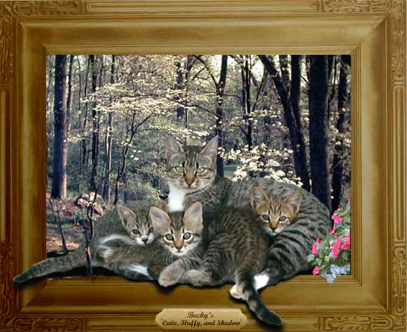

| Protective mom. Paintage. Bucky's kittens have grown since the last paintage, but still want their mother's protection when the monster human comes around with his camera. However, as can be seen, Bucky now takes me for granted (or now believes she has me trained). |